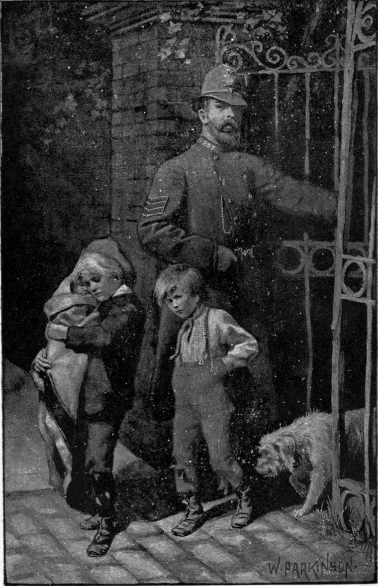

But, alas! Clare had made another enemy—the lad whose attempt to change the bandboxes he had foiled. The fellow followed him, lurkingly, all the way home—on the watch for fit place to pounce upon him, and punish him for doing right when he wanted him to do wrong. He saw him turn into the opening that led to the well, and thought now he had him. But when he followed him in, he was not to be seen! He did not care to cross the well, not knowing what might meet him on the other side; but here was news to carry back! He did so; and his master saw in them the opportunity of indulging his dislike and revenge, and a means of invalidating whatever Clare might reveal to his discredit!
Clare and the baby and Tommy and Abdiel had taken their supper with satisfaction, and were all asleep. It was to them as the middle of the night, though it was but past ten o’clock, when Abdiel all at once jumped right up on his four legs, cocked his ears, listened, leaped off the bed, ran to the door, and began to bark furiously. He was suddenly blinded by the glare of a bull’s-eye-lantern, and received a kick that knocked all the bark out of him, and threw him to the other side of the room. A huge policeman strode quietly in, sending the glare of his bull’s-eye all about the room like a vital, inquiring glance. It discovered, one after the other, every member of the family. So tired was Clare, however, that he did not wake until seized by a rough hand, and at one pull dragged standing on the floor.
“Take care of the baby!” he cried, while yet not half awake.
“I’ll take care o’ the baby, never fear!—an’ o’ you too, you young rascal!” returned the policeman.
He roused Tommy, who was wide awake, but pretending to be asleep, with a gentle kick.
“Up ye get!” he said; and Tommy got up, rubbing his ferret eyes.
“Come along!” said the policeman.
“Where to?” asked Clare.
“You’ll see when you get there.”
“But I can’t leave baby!”
“Baby must come along too,” answered the policeman, more gently, for he had children of his own.
“But she has no clothes to go in!” objected Clare.
“She must go without, then.”
“But she’ll take cold!”
“She don’t run naked in the house, do she?”
“No; she can’t run yet. I keep her in a blanket. But the blanket ain’t mine; I can’t take it with me.”
“You’re mighty scrup’lous!” returned the policeman. “You don’t mind takin’ a ‘ole ’ouse an’ garding, but you wouldn’ think o’ takin’ a blanket!—Oh, no! Honest boy you are!”
He turned sharp round, and caught Tommy taking a vigorous sight at him. Tommy, courageous as a lion behind anybody’s back, dropped on the rug sitting.
“We’ve done the house no harm,” said Clare, “and I will not take the blanket. It would be stealing!”
“Then I will take it, and be accountable for it,” rejoined the man. “I hope that will satisfy you!”
“Certainly,” answered Clare. “You are a policeman, and that makes it all right.”
“Rouse up then, and come along. I want to get home.”
“Please, sir, wouldn’t it do in the morning?” pleaded Clare. “I’ve no work now, and could easily go then. That way we should all have a sleep.”
“My eye ain’t green enough,” replied the policeman. “Look sharp!”
Clare said no more, but went to the baby. With sinking but courageous heart, he wrapped her closer in her blanket, and took her in his arms. He could not help her crying, but she did not scream. Indeed she never really screamed; she was not strong enough to scream.
“Get along,” said the policeman.

Clare led the way with his bundle, sorely incommoded by the size and weight of the wrapping blanket, the corners of which, one after the other, would keep working from his hold, and dropping and trailing on the ground. Behind him came Tommy, a scarecrow monkey, with mischievous face, and greedy beads for eyes—type not unknown to the policeman, who brought up the rear, big enough to have all their sizes cut out of him, and yet pass for a man. Down the stair they went, and out at the front door, which Clare for the first time saw open, and so by the iron gate into the street.
“Which way, please?” asked Clare, turning half round with the question.
“To the right, straight ahead. The likes o’ you, young un, might know the way to the lock-up without astin’!”
Clare made no answer, but walked obedient. It was a sad procession—comical indeed, but too sad when realized to continue ludicrous. The thin, long-bodied, big-headed, long-haired, long-tailed, short-legged animal that followed last, seemed to close it with a never-ending end.
There was no moon; nothing but the gas-lamps lighted Clare’s _Via dolorosa_. He hugged the baby and kept on, laying his cheek to hers to comfort her, and receiving the comfort he did not seek.
They came at last to the lock-up, a new building in the rear of the town-house. There this tangle of humanity, torn from its rock and afloat on the social sea, drifted trailing into a bare brilliant room, and at its head, cast down but not destroyed, went heavy-laden Clare, with so much in him, but only his misery patent to eyes too much used to misery to reap sorrow from the sight.
The head policeman—they called him the inspector—received the charge, that of house-breaking, and entered it. Then they were taken away to the lock-up—all but the faithful Abdiel, who, following, received another of the kicks which that day rained on every member of that epitome of the human family except the baby, who, small enough for a mother to drown, was too small for a policeman to kick. The door was shut upon them, and they had to rest in that grave till the resurrection of the morning should bring them before the magistrate.
Their quarters were worse than chilly—to all but the baby in her blanket manifoldly wrapped about her, and in Clare’s arms. Tommy would gladly have shared that blanket, more gladly yet would have taken it all for himself and left the baby to perish; but he had to lie on the broad wooden bench and make the best of it, which he did by snoring all the night. It passed drearily for Clare, who kept wide awake. He was not anxious about the morrow; he had nothing to be ashamed of, therefore nothing to fear; but he had baby to protect and cherish, and he dared not go to sleep.